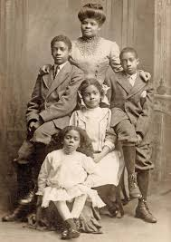

Ida Bell Wells-Barnett was an American investigative journalist, educator, and early leader in the civil rights movement born on July 16, 1862 in Holly Springs,MS She died on March 25, 1931, Chicago, IL She was one of the founders of the National Association for the Advancement of Colored People Throughout the 1890s, Wells documented lynching in the United States in articles and through pamphlets such as Southern Horrors: Lynch Law in all its Phases and The Red Record, which debunked the fallacy frequently voiced by Whites at the time that all Black lynching victims were guilty of crimes. Wells exposed the brutality of lynching, and analyzed its sociology, arguing that Whites used lynching to terrorize African Americans in the South because they represented economic and political competition and thus a threat of loss of power for Whites. She aimed to demonstrate the truth about this violence and advocate for measures to stop it.
Wells co-owned and wrote for the Memphis Free Speech and Headlight newspaper, where her reporting covered incidents of racial segregation and inequality. Eventually, her investigative journalism was carried nationally in Black-owned newspapers. Subjected to continued threats, including when a white mob destroyed her newspaper office and presses, Wells left Memphis for Chicago, Illinois. She married Ferdinand L. Barnett in 1895 and had a family while continuing her work writing, speaking, and organizing for civil rights and the women's movement for the rest of her life. 
Alfreda duster,Herman Kohlsaat Barnett, Charles Barnett, and ida jr were ida b wells children. Alfreda M. Duster was a social worker and civic leader in Chicago. She is best known as the youngest daughter of civil rights activist Ida B. Wells and as the editor of her mother's posthumously published autobiography, Crusade for Justice. Herman Kohlsaat Barnett he was Born on Nov 12, 1898 in Chicago, Cook, Illinois, United States. Brother of Ferdinand Lee Barnett [half], Albert Graham Barnett [half].